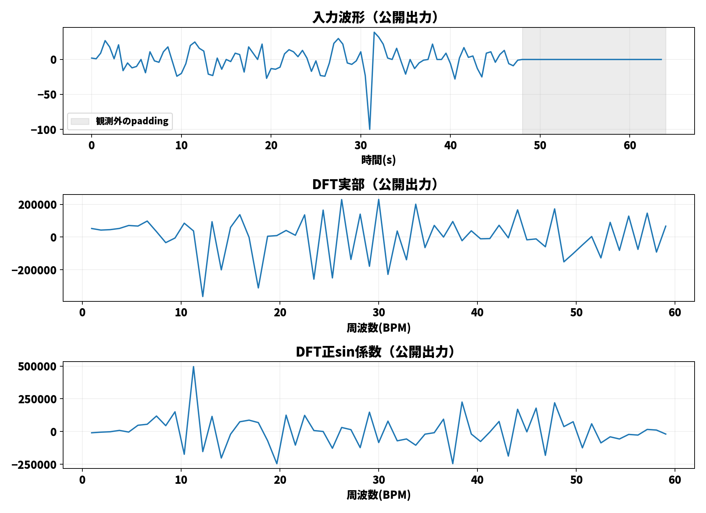

回路の公開中間値を波形で確認
これは旧・別診断実行のビューアです。各比較proof自身の公開値を見るには、再測定版ビューアを開いてください。
実測 csi_20260526_034004 の冒頭48秒。VMDは3モード・4反復、LSは8サブキャリア。
正解呼吸数は未取得。VMDは全域ピーク、LSは正常帯域内ピークで、前処理も異なります。この数値だけで方式の優劣は判断できません。
診断回路は入力・中間値を公開します。通常のプライバシー保護用回路とは別の回路・鍵です。ここに表示する値は実際の公開出力から取得し、両回路のGroth16証明を検証済みです。VMDへのPCA前処理とLSのI/Q選択は回路外です。
グラフにカーソルを置くと、近い観測点の数値を表示します。
描画には浮動小数点を使用。逆DFT・power・分子÷分母は表示側での変換であり、追加の回路内処理ではありません。正確な整数値は下の公開JSONに保存しています。
正確な値と証明
VMD公開JSON · VMD配列の位置・形状 · VMD読取用JSON
LS公開JSON · LS配列の位置・形状 · LS読取用JSON
PowerPointに貼れる固定図
